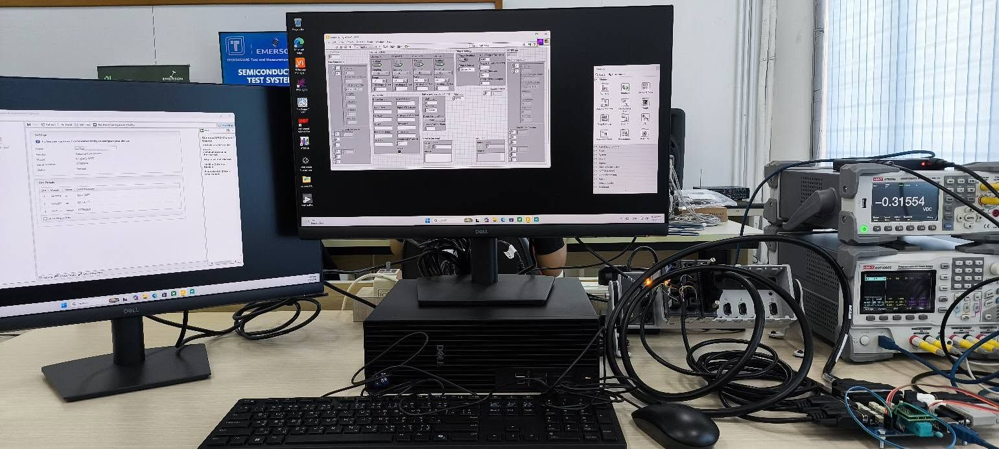
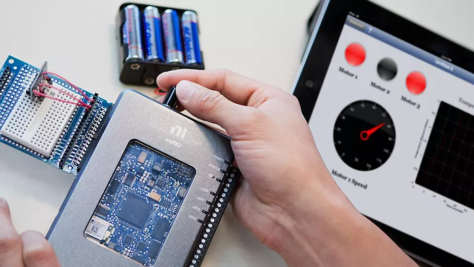
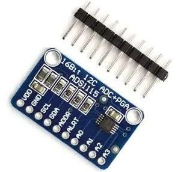
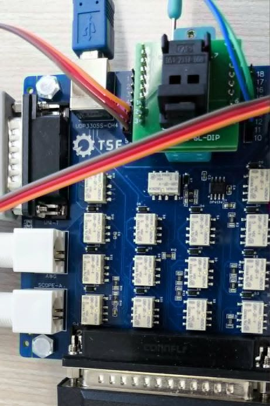
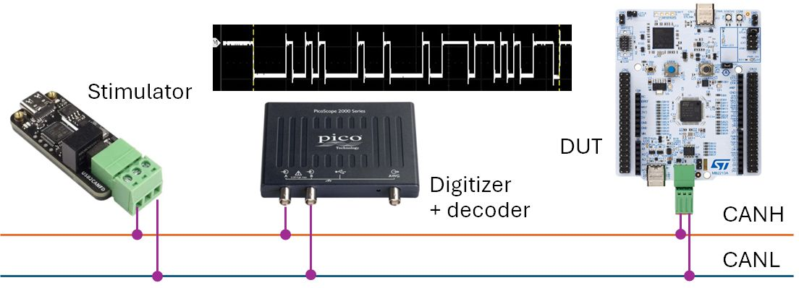

Automated Test for Functional Testing
A four-day hands-on workshop for test engineers: build automated test systems with NI LabVIEW, myRIO and programmable instruments, sequence them with NI TestStand, and extend them with Python and CAN bus testing.

Who it is for
Test and validation engineers who build or maintain functional test stations for electronic control boards. Basic electronics and measurement knowledge is assumed; prior LabVIEW experience helps but is not required.
What you will be able to do
- Acquire and generate signals with LabVIEW and myRIO
- Control programmable instruments with DAQmx, VISA and SCPI
- Build PASS/FAIL test sequences and reports in TestStand
- Automate instruments and test CAN/CANopen devices from Python
Schedule and training materials
Slides open in the browser. Press F for full screen and S for speaker view.
LabVIEW + myRIO
- Automated test equipment
- LabVIEW tutorials
- Analog loopback with myRIO
ADS1115 I²C ADC test with a state-machine VI
Instrument drivers
- Programmable instruments
- DAQmx and VISA/SCPI drivers
- CompactDAQ and PicoScope
LM321 op-amp offset voltage VOS and supply current IS test
NI TestStand
- Sequences, action and test steps
- Code modules and adapters
- Process models and callbacks
LM321 DC test sequence with PASS/FAIL limits and report
Python for testing
- PyVISA and Streamlit
- Automotive networks, CAN bus and CANopen
CANopen firmware test on a NUCLEO DUT
Workshop hardware




Software on the workshop PCs
- NI LabVIEW 2021 with myRIO Toolkit
- NI LabVIEW 2026 Q1
- NI TestStand 2026 Q1
No installation is needed. Project files, firmware and test sequences are provided on the workshop PCs.